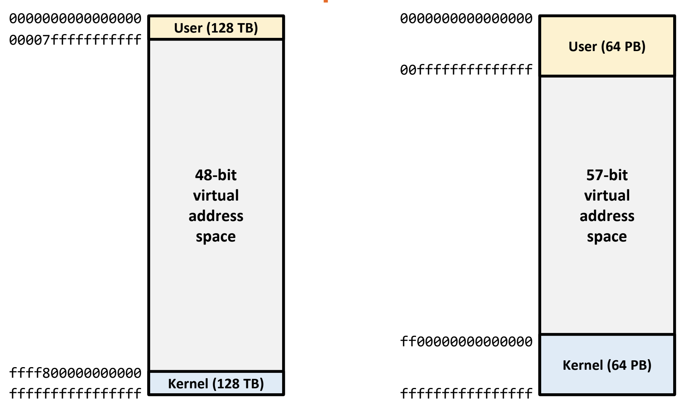
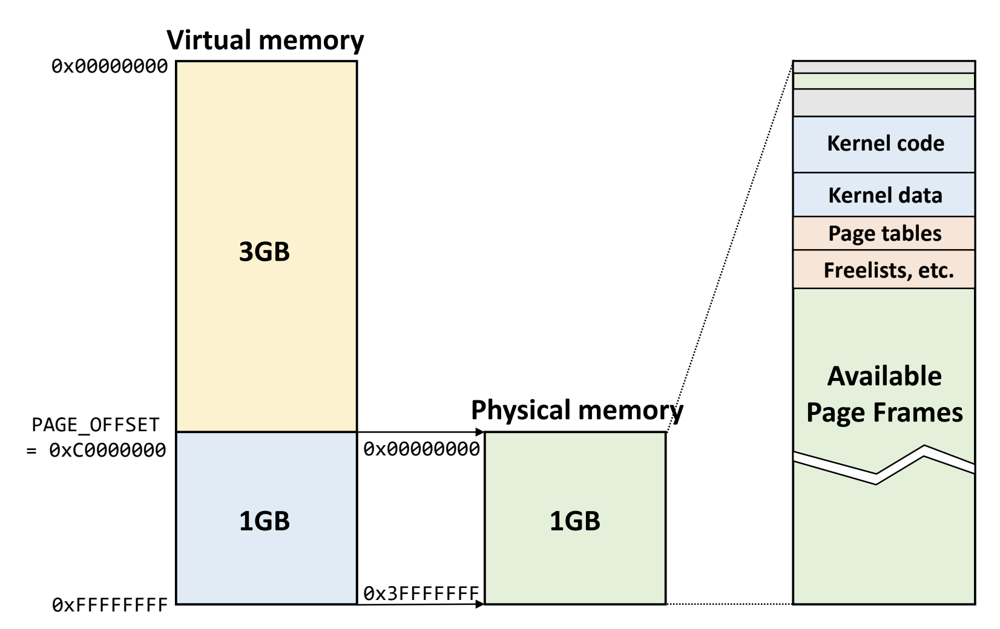
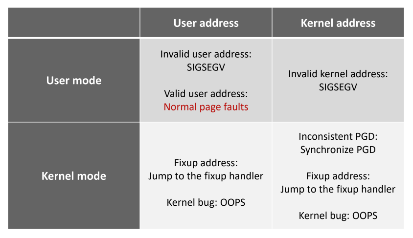

서울대학교 컴퓨터공학과 김진수 교수님의 "고급 운영체제" 강의를 필기한 내용입니다.
다소 잘못된 내용과 구어적 표현 이 포함되어 있을 수 있습니다.
Address system
- 우선 “주소체계” 라는 것은 memory 의 bit stream 을 byte 단위로 주소를 매겨 놓은 것이다
- i386: 32bit 주소 체계
- 따라서 개의 주소가 존재: VAS 전체 사이즈는
- 근데 이 VAS 의 크기가 process 가 사용할 수 있는 공간의 크기인데, 4Gi 는 진짜 말도 안되게 작기 때문에 64bit 시스템이 나온 것.
- 근데 이 64bit 를 모두 사용하지는 않는다; 처음 64bit 시스템이 나왔을때에는 48bit 주소쳬계를 사용했었고, 이루 Intel IceLake 부터는 9bit 를 추가해 57bit 주소체계를 사용함
- 따라서 48bit 주소체계에서는 VAS 사이즈가 가 되고
- 57bit 주소체계에서는 VAS 사이즈가 가 된다.
Linux virtual address map
- VAS 내에는 user memory space 와 kernel memory space 가 둘 다 있다. (물론 지금은 아님; 뒤에서 설명하마)

- 그래서 이 VAS 공간을 user 와 kernel 이 나눠먹게 되는데
- i386 시절에는 하위 3Gi 를 user 가 사용하고, 상위 1Gi 는 kernel 이 사용하도록 함
- amd64 에 와서는 VAS 전체 공간을 절반으로 뚝 잘라 하위 공간은 user 가 사용하고 상위 공간은 kernel 이 사용한다.
- 즉, 위의 그림처럼
- 48bit 체계에서는 하위 128Ti 를 user 가, 상위 128Ti 를 kernel 이 사용하고
- 57bit 체계에서는 하위 64Pi 를 user 가, 상위 64Pi 를 kernel 이 사용한다.
- 그래서 user mode 일때는 user VAS 에만 접근할 수 있고, kernel mode 일 때는 모든 VAS 에 접근할 수 있게 했다.
- 그럼 이 각각에 대해 어떻게 사용되었나 살펴보자.
i386

- Linux 는 관리의 편의를 위해 kernel space 에는 physical memory 전체가 1:1 로 linear 하게 매핑되어 있었다.
- Physical memory 의 상태가 그대로 kernel space 에 노출되는 것.
- 즉, page table 없이 kernel virtual memory addr 에 단순한 bitwise operation 을 때리면 그냥 physical memory addr 가 나왔음
- 다만 page table 이 진짜 없어도 되나 더블체크 필요 - 머릿속으로는 없어도 될 것 같은데 수업시간 중에 가장 큰 superpage 를 사용한다는 얘기를 했단말이지
- i386 시스템에서 kernel VAS 크기가 1Gi 인 것은 당시 메모리의 사이즈가 1Gi 를 넘지 않았기 때문이다.
- 즉, 1Gi 크기인 kernel VAS 에 1Gi 보다 작은 physical memory 를 linear mapping 하면 kernel VAS 를 통해 모든 physical memory 에 접근할 수 있기 때문.
- 그래서 위 그림에서 보이는 것처럼 상위 1Gi 는 physical memory 에 linear mapping 되어 있고 여기에서 일부는 kernel 관련, 나머지는 frame 으로 user memory space 에 page table 로 mapping 되게 되는 것이다.
i386 High/Low memory
- 근데 문제가 생겼다: physical memory 크기가 1Gi 보다 커지기 시작한 것.
- 따라서 kernel VAS 에서 physical memory 전체가 보이지 않게 되기에 이것을 해결해야 했다.
- 처음에 등장한 단순한 생각은 그냥 kernel VAS 사이즈를 늘리는 것이다.
- User 와 kernel space 크기를 동일하게 2Gi 로
- 하지만 user space 가 줄어들기에 다음과 같은 방법이 고안된다.

- Kernel VAS 를 1Gi 로 그대로 두고,
- 여기에서 890Mi 정도는 physical memory 에 linear mapping 을 하고
- 이 공간을 Low Memory 공간이라고 한다
- Kernel VAS 에서 나머지 134Mi 에 대해서는 physical memory 의 남은 공간에 user VAS 에서 처럼 page table 로 mapping 을 해놓았다.
- 이 공간을 High Memory 공간이라 한다.
- 따라서 user VAS 공간을 더 넉넉하게 가져갈 수는 있었지만
- 여기에 접근할 때는 page table 을 고치면서 접근해야 하는 등의 번거로운게 있었다고 한다.
- 좀 딴얘기긴 한데
- kernel VAS 공간을 동적 할당하는
kmalloc의 경우에는 vaddr 와 paddr 이 모두 contiguous 한 공간을 할당해 주고, 따라서 이것은 Low Memory 공간에 할당된다. - 근데
vmalloc의 경우에는 버퍼와 같은 용도로 사용할 사이즈는 더 크지만 contiguous 공간을 제공해주게 되고 따라서 contiguous 제약사항이 없기 때문에 High Memory 공간에 할당된다.
- kernel VAS 공간을 동적 할당하는
- 하지만 이런 scheme 은 더이상 사용하지 못하게 되었다; physical memory 사이즈 자체가 4Gi 보다 커지게 되어 더이상 VAS 전체를 다 사용해도 physical memory 공간을 담지 못하게 되었기 때문.
amd64
- 위와 같은 문제로, 64bit 로 시스템이 바뀌었고, 다음처럼 사용된다.

- 위 그림은 48bit 체계에 대한 그림인 것을 알 수 있는데
- 중간에 64TB 의 공간에 physical memory 가 넉넉하게 linear mapping 된다
Kernel Page Table Isolation (KPTI)
- 위와 같은 구조는 Meltdown attack 이 발견되면서 완전히 바뀌게 된다.
- Meltdown attack 은 뭐 이상한 짓을 하면 user mode 에서 kernel VAS 를 조금 엿보는게 가능하다는 것을 밝혀낸 것이다.
- 따라서 meltdown attack 때문에 이렇게 바꾼다.
- VAS 내부에는 kernel VAS 를 진짜 최소한 만 두고
- 이 공간은 trap, syscall, interrupt hander 가 실행되기 위한 사전 작업용도의 작은 kernel 공간이다.
- 따라서 kernel space 로 진입하기 전에 잠깐 거쳐가는 공간이라고 해서 Trampoline space 라고도 불린다.
- 나머지 공간에 대해서는 어쩔 수 없이 linear mapping 으로 접근하지 못하고 kernel 용 page table 을 통해 접근하도록 한다.
- VAS 내부에는 kernel VAS 를 진짜 최소한 만 두고

- 따라서 user page table 에 추가적으로 분리된 kernel page table 이 생기게 되었고 이것을 Kernel Page Table Isolation (KPTI) 라고 한다
Kernel page table
- 따라서 이제는 page table 이 이렇게 구현된다.

- 전체 page table 의 크기는 8KB
- 여기서 첫 4KB 는 kernel page table, 이후의 4KB 는 user page table
- 이 전체 구조에 대한 시작주소는 linux 에서 task structure 의
t->mm->pgd에 저장되어있다.- 참고로
t->mm은 task 의 VAS 정보를 저장하는 구조체다. - 따라서 kernel page table 시작주소는 그냥
t->mm->pgd이고 - User page table 시작주소는 여기에서 4Ki 만큼 움직인
mm->pgd | (1<<12)가 된다. - 그래서 user mode 일때는 CR3 를
mm->pgd | (1<<12)로 설정하고 kernel mode 가 되면 CR3 를mm->pgd로 변경한다.
- 참고로
- 위에서 말한 trampoline space 에 대한 PTE 는 kernel page table 에 NX bit 로 마킹된 상태로 저장된다.
- User VAS 에 대한 PTE 는 이전 강의에서 말한것 처럼 page fault 시에 demand paging 하며 동적으로 적재되기에 어느 paddr 로 갈지 모르지만
- Kernel VAS 에 대한 paddr 은 거의 안바뀌기 때문에 얘네들에 대한 PTE 는 원본 (
swapper_pg_dir) 이 있고 이것을 각task_struct에 복사해 준다- 혹시라도 kernel 이 메모리를 많이 사용하게 되어 이 process 당 kernel page table 이 변경되면 원본인
swapper_pg_dir도 바꿔주는데 - 이때 모든 process 에 대해서 이것을 다 바꾸진 않고 lazy 하게 작동한다고 한다: 일단 원본을 바꾸지 않고 버티다가 나중에 kernel page fault 가 나면 바꿔주는
- 물론 kernel page fault 는 panic 이지만 이 경우에 한에서만 특별하게
- 뒤에서 한번 더 나올거다
- 혹시라도 kernel 이 메모리를 많이 사용하게 되어 이 process 당 kernel page table 이 변경되면 원본인
- 이전에는 user <-> kernel 간에 page table 이 안바뀌기 때문에 mode 가 전환될 때 CR3 가 안바뀌어 TLB flush 도 수행되지 않았지만
- 이제는 mode 전환시 page table 이 바뀌어 CR3 가 바뀌기 때문에 TLB flush 가 발생한다.
- 따라서 ASID 가 중요해진다더라.
VMA

- Virtual Memory Area (VMA) 는 VAS 의 부분집합으로 쉽게 생각하면 code/data/heap/stack 등을 일컫는다고 생각하면 된다.
- 현재 사용중인 virtual address 가 어디고 어디가 남았으며 하는 정보를 관리해야 하는데 linux 에서는 이것을 VMA 를 이용해 추적한다.
- 각 VMA 는
vm_area_struct라는 구조체로 표현되며 이 구조체가 대변하는 VAS 내의 공간은 할당된 공간인 것이고, - 만약 어떤 vaddr 에 대해 이 구조체를 찾지 못하면 할당되지 않은 공간인 것이다.
- 이것을 빠르게 찾기 위해 각
vm_area_struct들은 reb-black tree 자료구조로 연결되어 있다고 한다.
- 각 VMA 는
- procfs 에서 확인하려면
/proc/${pid}/maps를 보면 된다.
Lazy TLB flush
- TLB flush 는 아주 값비싼 작업이고, 따라서 이것을 최대한 피할 수 있으면 좋은데
- 위에서 설명한 KPTI 구조에서는 다음과 같이 최적화할 수 있다.
- 만약에 context switch 가 발생하는데, 옮겨가는 task 가 user VAS 가 없는놈 (가령 kernel thread 랄지) 인 상황에 대해 생각해 보자.
- 그럼 새로운 task 의 kernel page table 이나 기존 task 의 kernel page table 이나 똑같을 거다.
- 당연히
swagger_pg_dir을 두 task 모두 복사받았을 테니
- 당연히
- 따라서 이 경우에는 굳이 CR3 를 새로 설정해서 TLB flush 가 발생되게 할 이유가 없다.
- 이것을 조금 더 구체적으로 보면
- Context switch 가 일어나게 하기 위해서는, kernel mode 로 드가야 하기 때문에 CR3 를
t->active_mm->pgd값으로 바꾼다.- 참고로, 일반 user process 의 경우에는
t->active_mm은t->mm과 같다.
- 참고로, 일반 user process 의 경우에는
- 그런데 user VAS 가 없는 kernel thread 같은 애들의 경우에는
t->mm값이NULL이다.- 왜인지는 잘 모르겠다; kernel 에서는 VAS 를 쓸 필요가 없기 때문에
t->mm를NULL로 해놓는 것인가
- 왜인지는 잘 모르겠다; kernel 에서는 VAS 를 쓸 필요가 없기 때문에
- 따라서
t->mm이NULL인 경우에는 CR3 를 이전 task 의t->active_mm->pgd로 계속 유지해 TLB flush 가 일어나지 않게 한다.
- Context switch 가 일어나게 하기 위해서는, kernel mode 로 드가야 하기 때문에 CR3 를
Page cache
- 메모리에는 Page cache 가 있어서 file IO 의 중간 버퍼 역할을 한다.
- File write 할 때에도 그냥 이 page cache 에 던져 놓으면 replace 되며 디스크로 flush 되고
- File read 할 때에도 file 이 이 page cache 공간에 적재된다.
- 메모리의 대부분은 이 page cache 가 먹고 있다
- File 의 일부 block 이 mem 의 page cache 로 올라가는 것이기 때문에 filesystem 은 file 의 어느 block 이 page cache 의 어느 주소에 올라와 있는지 추적해야 한다.
- 이것은 radix tree 로 구현되고, inode 하나 당 tree 하나 생성
- radix tree 이기 때문에 cache 에 없으면 leaf 까지 안내려가도 되니까 다행, cache 에 있으면 leaf 까지 내려가니까 lookup 에 쫌 더 오래걸림
- 요즘은 radix tree 를 xarray 라는 것으로 바꿨다고 한다.
여기부터는
2024-06-04강의
Page fault handler
- Page fault: page table 로 addr translation 이 안되는 경우
발생할 수 있는 page fault 들
- 다음과 같은 경우의 수가 있다:

- User address, user mode 에서의 page fault:
- Invalid user address: null ptr, 할당되지 않은 곳 (heap/stack 사이에 비어있는 이상한 곳 등) -
SIGSEGV발생 - Valid user address: demand paging, swap 등에 의해 발생 - 정상적인, 일반적인 경우
- Invalid user address: null ptr, 할당되지 않은 곳 (heap/stack 사이에 비어있는 이상한 곳 등) -
- Kernel address, user mode 에서의 page fault:
- 권한이 없기 때문에 무조건 잘못된 접근 -
SIGSEGV
- 권한이 없기 때문에 무조건 잘못된 접근 -
- User address, kernel mode 에서의 page fault:
- kernel mode 에서는 기본적으로 page fault 가 발생하지 않는 것이 정상이다 - 발생하면 뭔가 이상한 상황 (
OOPS- 커널 버그) - 근데 허용되는 케이스가 있다
- User space 에 있는 buffer 를 kernel space 로 copy 해서 사용하려고 할 때 이놈이 swap out 되어있는 경우
- 이것은 buffer 를 먼저 memory 에 올린 다음에 kernel mode 로 바꾸는 방법으로 page fault 가 안나게 할 수는 있지만
- 이것은 너무 번거롭다 - 일반적으로는 memory 에 올라와 있는 것이 흔하므로
- 그래서 일단 copy 해놓고 Fixup address 라는 kernel 의 list 에 넣어놓음
- 그리고 이 list 에 있는 공간에 대해서는 page fault 가 발생할 수 있고 처리 루틴에 따라 처리된다.
- User space 에 있는 buffer 를 kernel space 로 copy 해서 사용하려고 할 때 이놈이 swap out 되어있는 경우
- kernel mode 에서는 기본적으로 page fault 가 발생하지 않는 것이 정상이다 - 발생하면 뭔가 이상한 상황 (
- Kernel address, kernel mode:
- 이것도 위의 경우와 마찬가지로 기본적으로는
OOPS인데 - 허용되는 케이스는
- 바로 위에 나온 Fixup address 예외가 여기에서도 동일하게 발생할 수 있고
- 추가적으로, 이전에 말한 lazy
swapper_pg_dirupdate 상황도 발생할 수 있다.- 즉, 모든 process 가 동일한 copy 갖고 있는 이 page table 이 어떤 process 실행 중에 바뀔 경우 다른 process 에도 반영하는 것은 lazy 하게 처리한다.
- 일단 다른 process 에 대해서는 반영 안하고 해당 반영 안한 부분에 대해서만 추적하고 있다가 다른 process 가 그 부분에서 page fault 가 나면 처리 루틴이 도는 것
- 이것을 Inconsistent PGD 라고 한다
- 이것도 위의 경우와 마찬가지로 기본적으로는
Page fault handler
- 코드에서는
__do_page_fault함수를 찾아보면 된다고 한다

address >= TASK_SIZE_MAX: 주소가TASK_SIZE_MAX보다 크면 kernel space, 아니면 user spacedo_user_addr_fault(): User space 에서의 page fault 처리in_interrupt() || !mm?은 이해안되니까 일단 넘어가자- VMA 를 찾아서 valid 한지 검사:
- Valid 하면 demand page (+swap) 상황이다 (아마?) - Access 검사 후 해결
- “Access OK?” 가 뭔지는 몰겠음
- 그렇지 않다면
- “Expand stack” 은 stack 공간이 아직 자라나지 않은 상태에서 접근한 경우이다
- 즉, timing 문제인 것
- 맞다면 access 검사 후 해결
- 위 경우가 아니라면 user mode 일 때는 무조건 비정상 접근 (
SIGSEGV) 이다. - 만약 kernel mode 라면 Fixup address 상황인지 보고 맞다면 해결, 아니라면
OOPS
- “Expand stack” 은 stack 공간이 아직 자라나지 않은 상태에서 접근한 경우이다
- Valid 하면 demand page (+swap) 상황이다 (아마?) - Access 검사 후 해결
do_kern_addr_fault(): Kernel space 에서의 page fault 처리- “vmalloc fault” 가 Inconsistent PDG 상황인 것 같다 - 이때는
swagger_pg_dirsync 를 맞추는 것으로 해결 - Kernel mode 가 아니면 무조건
OOPS - Kernel mode 인데 “vmalloc fault” 가 아니면 해결 가능한 상황은 Fixup address 밖에 없다 - 맞다면 해결, 아니라면
OOPS
- “vmalloc fault” 가 Inconsistent PDG 상황인 것 같다 - 이때는
handle_mm_fault(): Normal page fault handling

do_anonymous_page(): PTE 가 없고, anonymous VMA 인 경우- Heap 생성 후 처음 접근하는 등의 상황에서 발생할 수 있다
- Read operation 이면 zero page 를 PTE 에 mapping
- Write operation 이면 한 frame 을 0 으로 clear 해서 PTE 에 mapping
do_fault(): PTE 가 없고, file based VMA 인 경우- 아마 code 영역 page fault 거나 file 이 open 된 이후 처음으로 접근되는 상황일거다
- 우선 Page cache 에 이미 올라와 있는지 확인
- 맞다면 해당 page cache 을 PTE 에 mapping
- Page cache 에도 없다면 disk IO 한 뒤에 PTE mapping
- Synchronous reader head (요청된 page + 몇개 더 가져오는 방식)
- 그 다음 해당 private mapping 인지 확인하는데, 이것은 write operation 일 경우 COW 하기 위함
do_swap_page(): PTE 는 있지만 memory 에는 없는 경우- swap out 된 경우이다.
- 우선 swap cache 를 뒤져 보고
- 있으면 사용
- 없으면 swap in IO
- 이때도 Synchronous reader head (요청된 page + 몇개 더 가져오는 방식)
do_wp_page(): PTE 도 있고 memory 에도 있는 경우- read-only 로 설정된 경우이다 - 이때는 page fault 라기 보다는 protection fault 인 것
- 따라서 나만 사용하는 경우에는 그냥 r/w 로 바꿔서 write 하고
- 나말고 딴사람도 사용하는 경우에는 COW 수행
Swapping
- 이전 19강에서 말한 내용이랑 동일하다.
- free page 수를 kernel 이 모니터링하고 있음
- free page 수가 low_watermark_pages 보다 작아지면 kswapd 가 깨어나 swap 수행
- 그러다가 high_watermark_pages 보다 커지면 kswapd 가 잠듬
- 만약에 min_watermark_page 에 도달하면 그때는 sync 모드로 작동
- 이때는 하나를 swap in 하려면 하나를 무조건 swap out 해야 한다
- min_watermark_page 보다 작아질 수는 있는데, 이것은 kernel page 의 경우에만 가능
Page replacement algorithm
사용하는 LRU list 들
LRU_UNEVICTABLE: 절대로 못빼는 애들 (ramfs, page table, locked page 등?)- Anonymous page 와 file-backed 에 대해 Active LRU 와 Inactive LRU 를 한 쌍씩 가지고 있다.
- 즉, 다음의 4개가 있음:
LRU_ACTIVE_ANONLRU_ACTIVE_FILELRU_INACTIVE_ANONLRU_INACTIVE_FILE- 이것을 분리하는 것은 android 같이 inactive 의 경우 swap 하지 않고 죽여버리는 등의
- Active 와 inactive 의 처리 방법이 anon 과 file 에 따라 다르기 때문이라고 한다.
- Anonymous 의 경우에는
LRU_ACTIVE_ANON의 LRU 방향에서부터 scan 해서 inactive 로 내쫒고, inactive 의 경우에도 scan 해서 disk 로 내쫒는 방식- Anonymous 는 temporal locality (recency) 가 높다고 판단하는 것이다 - 접근되면
LRU_ACTIVE_ANON의 MRU 에 넣는다
- File-backed 의 경우에는
- 얘는 spacial locality (frequency) 가 높다고 판단한다 - 접근되면
LRU_INACTIVE_FILE에 넣고 또 접근되면LRU_ACTIVE_FILE에 넣음- 즉, ARC 와 비슷하다
- 얘는 spacial locality (frequency) 가 높다고 판단한다 - 접근되면
Refault distance
#draft 여기는 일단은 패스하자. (ppt 19p ~)
- ghost cache 를 유지하지 않게 하기 위한 방법
- inactive_age: inactive_file 에서 빠져나간 page 개수
- LRU 에서 swap 되어 나가서나
- 중간에 있다가 또 접근되어 active_file 로 옮겨지는 경우
- 내가 나가있던 동안의 inactive_age 의 변화는 내가 없는 동안의 reference 된 page 의 수에 근사
- active list 의 크기보다 내가 나가있던동안 추가된 page 의 수 (r-e) 가 작으면 나는 cache 되었어햐 하는 page 이기에 cache 로 올라간다?
- active list 의 크기만큼의 ghost cache 가 있다고 가정하고 이 안에 있을 때 hit 되는 경우를 (r-e) 값으로 근사하고자 하는 것
- linux kernel 의
workingset.c를 참조해라?